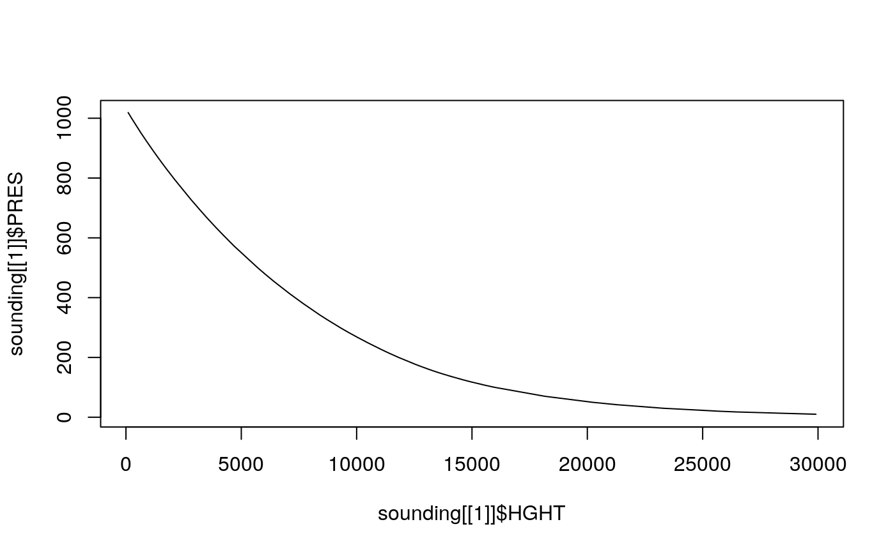
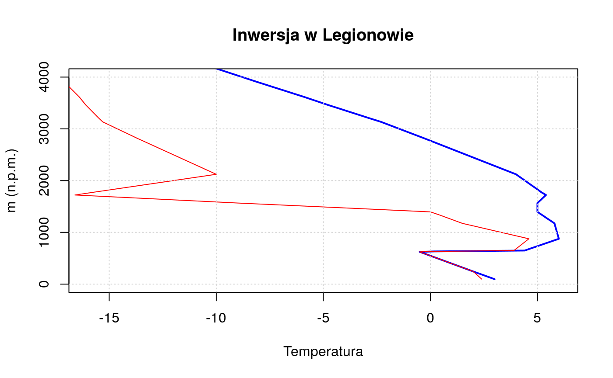

Use Case - IMGW database [PL}
usecase.RmdIMGW-PIB database (example no. 1)
- Pobieranie danych miesiecznych ze stacji meteo (SYNOP)
- Zrobienie wykresu dla 1-2 wybranych stacji (np. Poznan i Warszawa - w miare homogeniczne, Wroclaw odpalony za bardzo)
- Zrobienie wykresow dla miesiecy i wrzucenie trendu liniowego
##
## Attaching package: 'dplyr'## The following objects are masked from 'package:stats':
##
## filter, lag## The following objects are masked from 'package:base':
##
## intersect, setdiff, setequal, unionmeteo_poz = meteo("monthly", rank = "synop", year = 1966:2018, station = "POZNAŃ") %>%
select(id, station, yy, mm, t2m_mean_mon) %>%
group_by(yy) %>%
summarise(t2 = mean(t2m_mean_mon))
ggplot(meteo_poz, aes(yy, t2)) +
geom_line() +
geom_smooth(method = "lm", se = FALSE) +
labs(title = "Poznań",
subtitle = "Annual mean air temperature (1966 - 2018)",
x = "Year",
y = "Temperature [*C]") +
ggpubr::stat_regline_equation()
# or as an alternative:
plot(
meteo_poz$yy,
meteo_poz$t2,
type = "l",
xlab = "Year",
ylab = "Temperature [*C]",
main = "Poznań - annual mean air temperature (1966 - 2018)"
)
model = lm(t2 ~ yy, data = meteo_poz)
abline(model, col = "red", lwd = 3)
legend("topleft",
legend = paste0("y = ", round(coef(model)[2], 3), "x ",
round(coef(model)[1], 1)), bty = "n")
IMGW-PIB database (example no. 2)
- Przetworzenie pobranych danych na serie roczne
- Zgridowanie do 0.01 poprzez interpolacje? (albo przerobienie na kilometrowke)
- Obliczenie trendu dla serii rocznej w punktach gridowych - robisz mape dla wspolczynnika kierunkowego trendu w PL
## Linking to GEOS 3.7.0, GDAL 2.4.0, PROJ 5.2.0## Registered S3 method overwritten by 'xts':
## method from
## as.zoo.xts zoo## Loading required package: sp##
## Attaching package: 'raster'## The following object is masked from 'package:dplyr':
##
## selectlibrary(rnaturalearth)
# downloads monthly data and calculates annual mean air temperature
meteo_mon = meteo("monthly", rank = "synop", year = 1966:2018, coords = TRUE) %>%
dplyr::select(id, station, X, Y, yy, mm, t2m_mean_mon) %>%
group_by(yy, id, station, X, Y) %>%
summarise(t2 = mean(t2m_mean_mon))
# creates spatial object
meteo_mon_sp = meteo_mon %>%
filter(!is.na(X)) %>%
st_as_sf(coords = c("X", "Y"), crs = 4326)
# plots spatial data
europe = ne_countries(scale = "medium", continent = "Europe", returnclass = "sf")
tm_shape(europe) +
tm_borders(col = "black", lwd = 2) +
tm_shape(meteo_mon_sp) +
tm_symbols(col = "t2", title.col = "") +
tm_facets(by = "yy") +
tm_layout(main.title = "Annual mean air temperature in Poland")## Variable "t2" contains positive and negative values, so midpoint is set to 0. Set midpoint = NA to show the full spectrum of the color palette.
# prepares spatial data in a projected crs
meteo_mon_sp = st_transform(meteo_mon_sp, 2180)
poland = filter(europe, iso_a3 == "POL") %>%
st_transform(2180)
# creates an empty grid
meteo_grid = raster(poland, ncol = 50, nrow = 50)
# splits data by year, creates idw models, and make interpolations
meteo_inter = meteo_mon_sp %>%
group_split(yy) %>%
purrr::map(~gstat(formula = t2~1, data = ., #idw
nmax = 10, set = list(idp = 0.1))) %>%
purrr::map(~interpolate(meteo_grid, .)) %>%
stack()## [inverse distance weighted interpolation]
## [inverse distance weighted interpolation]
## [inverse distance weighted interpolation]
## [inverse distance weighted interpolation]
## [inverse distance weighted interpolation]
## [inverse distance weighted interpolation]
## [inverse distance weighted interpolation]
## [inverse distance weighted interpolation]
## [inverse distance weighted interpolation]
## [inverse distance weighted interpolation]
## [inverse distance weighted interpolation]
## [inverse distance weighted interpolation]
## [inverse distance weighted interpolation]
## [inverse distance weighted interpolation]
## [inverse distance weighted interpolation]
## [inverse distance weighted interpolation]
## [inverse distance weighted interpolation]
## [inverse distance weighted interpolation]
## [inverse distance weighted interpolation]
## [inverse distance weighted interpolation]
## [inverse distance weighted interpolation]
## [inverse distance weighted interpolation]
## [inverse distance weighted interpolation]
## [inverse distance weighted interpolation]
## [inverse distance weighted interpolation]
## [inverse distance weighted interpolation]
## [inverse distance weighted interpolation]
## [inverse distance weighted interpolation]
## [inverse distance weighted interpolation]
## [inverse distance weighted interpolation]
## [inverse distance weighted interpolation]
## [inverse distance weighted interpolation]
## [inverse distance weighted interpolation]
## [inverse distance weighted interpolation]
## [inverse distance weighted interpolation]
## [inverse distance weighted interpolation]
## [inverse distance weighted interpolation]
## [inverse distance weighted interpolation]
## [inverse distance weighted interpolation]
## [inverse distance weighted interpolation]
## [inverse distance weighted interpolation]
## [inverse distance weighted interpolation]
## [inverse distance weighted interpolation]
## [inverse distance weighted interpolation]
## [inverse distance weighted interpolation]
## [inverse distance weighted interpolation]
## [inverse distance weighted interpolation]
## [inverse distance weighted interpolation]
## [inverse distance weighted interpolation]
## [inverse distance weighted interpolation]
## [inverse distance weighted interpolation]
## [inverse distance weighted interpolation]
## [inverse distance weighted interpolation]# calculates a trend for each pixel
years = 1966:2018
meteo_trend = calc(meteo_inter, fun = function(x) {summary(lm(x ~ years))$coefficients[2]}) %>%
mask(poland)
# plots a trend map
tm_shape(meteo_trend) +
tm_raster(style = "cont", title = "", breaks = seq(0, 0.04, 0.01)) +
tm_shape(europe) +
tm_borders(col = "black", lwd = 2) +
tm_layout(legend.outside = TRUE,
main.title = "Annual mean air temperature in Poland - annual trend")
Studium przypadku - meteo_sounding() - Dane radiosondażowe
Pobieranie danych i wykres roboczy dla inwersji w Legionowie z 16/02/2019:
## [[1]]
## PRES HGHT TEMP DWPT RELH MIXR DRCT SKNT THTA THTE THTV
## 1 1019.0 96 3.0 2.4 96 4.48 270 4 274.7 286.9 275.4
## 2 1000.0 245 2.0 2.0 100 4.44 255 6 275.1 287.3 275.9
## 3 954.0 624 -0.5 -0.5 100 3.88 324 6 276.3 287.1 277.0
## 4 953.0 632 0.2 0.2 100 4.09 326 6 277.1 288.5 277.8
## 5 951.0 649 4.4 3.9 97 5.35 329 6 281.6 296.5 282.5
## 6 925.0 876 6.0 4.6 91 5.78 10 6 285.4 301.8 286.4
## 7 893.0 1164 5.8 1.6 74 4.83 307 10 288.1 302.1 289.0
## 8 892.0 1173 5.8 1.5 74 4.82 305 10 288.2 302.1 289.0
## 9 874.0 1340 5.2 0.4 71 4.52 295 14 289.3 302.5 290.1
## 10 868.0 1396 5.0 0.0 70 4.43 305 13 289.6 302.6 290.4
## 11 850.0 1567 5.0 -9.0 36 2.29 335 12 291.4 298.4 291.8
## 12 834.0 1722 5.4 -16.6 19 1.26 2 13 293.4 297.4 293.6
## 13 829.0 1771 5.2 -15.8 20 1.35 10 14 293.7 298.0 293.9
## 14 794.0 2122 4.0 -10.0 35 2.26 23 13 296.0 303.1 296.4
## 15 728.0 2819 -0.3 -13.7 36 1.84 50 12 298.7 304.6 299.1
## 16 700.0 3134 -2.3 -15.3 36 1.67 30 14 299.9 305.3 300.2
## 17 693.0 3212 -2.9 -15.5 37 1.66 25 14 300.1 305.5 300.4
## 18 671.0 3464 -4.8 -16.1 41 1.63 35 12 300.8 306.1 301.1
## 19 658.0 3617 -5.9 -16.4 43 1.62 15 12 301.2 306.4 301.5
## 20 634.0 3907 -8.1 -17.1 48 1.58 0 14 301.9 307.1 302.2
## 21 608.0 4233 -10.5 -17.9 55 1.54 15 14 302.8 307.8 303.0
## 22 602.0 4311 -11.1 -18.1 56 1.54 9 14 302.9 308.0 303.2
## 23 593.0 4424 -11.8 -19.0 55 1.45 0 14 303.4 308.2 303.7
## 24 572.0 4696 -13.6 -21.1 53 1.25 10 17 304.5 308.6 304.7
## 25 500.0 5710 -20.1 -29.1 45 0.69 0 17 308.5 310.9 308.6
## 26 480.0 6012 -22.1 -31.1 44 0.60 345 21 309.7 311.8 309.8
## 27 466.0 6230 -23.5 -32.5 43 0.54 356 17 310.5 312.4 310.6
## 28 454.0 6418 -25.1 -33.6 45 0.50 5 14 310.9 312.7 311.0
## 29 414.0 7082 -30.6 -37.3 52 0.38 350 16 312.0 313.4 312.1
## 30 400.0 7330 -32.7 -38.7 55 0.34 5 17 312.4 313.7 312.5
## 31 382.0 7651 -35.5 -41.5 54 0.26 11 17 312.9 313.9 312.9
## 32 379.0 7706 -35.9 -39.3 71 0.34 12 17 313.0 314.3 313.1
## 33 342.0 8404 -41.4 -48.6 45 0.14 25 16 314.9 315.5 315.0
## 34 326.0 8730 -43.9 -52.9 36 0.09 23 17 315.8 316.1 315.8
## 35 300.0 9280 -48.7 -56.7 39 0.06 20 19 316.6 316.9 316.6
## 36 295.0 9391 -49.7 -56.7 44 0.06 18 19 316.7 317.0 316.7
## 37 284.0 9638 -51.5 -59.7 37 0.04 15 19 317.6 317.7 317.6
## 38 268.0 10016 -54.3 -64.3 28 0.03 20 21 318.8 318.9 318.8
## 39 250.0 10460 -58.1 -66.1 35 0.02 25 23 319.6 319.7 319.6
## 40 248.0 10510 -58.5 -66.4 36 0.02 30 23 319.6 319.7 319.6
## 41 228.0 11030 -63.1 -69.1 44 0.02 36 30 320.5 320.5 320.5
## 42 219.0 11275 -65.1 -67.9 68 0.02 38 33 321.1 321.2 321.1
## 43 217.0 11331 -65.3 -68.2 67 0.02 39 34 321.6 321.7 321.6
## 44 214.0 11414 -66.0 -69.1 65 0.02 40 35 321.9 322.0 321.9
## 45 200.0 11820 -69.1 -73.4 54 0.01 35 37 323.2 323.2 323.2
## 46 177.0 12544 -73.3 -77.9 50 0.01 35 37 327.8 327.8 327.8
## 47 171.0 12746 -73.1 -78.2 46 0.01 35 43 331.4 331.4 331.4
## 48 160.0 13137 -72.7 -78.7 40 0.01 31 41 338.4 338.4 338.4
## 49 156.0 13286 -71.7 -79.7 29 0.00 30 41 342.5 342.6 342.5
## 50 152.0 13441 -68.9 -84.2 9 0.00 30 29 349.9 349.9 349.9
## 51 150.0 13520 -67.5 -86.5 5 0.00 15 21 353.6 353.6 353.6
## 52 149.0 13560 -67.0 -89.0 3 0.00 10 21 355.2 355.2 355.2
## 53 147.0 13642 -65.9 -93.9 1 0.00 2 23 358.4 358.4 358.4
## 54 144.0 13767 -66.4 -92.3 2 0.00 350 25 359.7 359.7 359.7
## 55 136.0 14112 -67.7 -87.7 4 0.00 358 30 363.3 363.3 363.3
## 56 125.0 14621 -66.8 -87.4 4 0.00 10 37 373.9 373.9 373.9
## 57 120.0 14868 -66.3 -87.3 4 0.00 17 31 379.1 379.1 379.1
## 58 118.0 14970 -63.7 -86.7 3 0.00 20 29 385.7 385.7 385.7
## 59 107.0 15567 -65.0 -87.4 3 0.00 10 17 394.2 394.2 394.2
## 60 100.0 15980 -65.9 -87.9 3 0.00 355 31 400.1 400.1 400.1
## 61 70.0 18160 -62.7 -89.7 2 0.00 10 29 449.9 449.9 449.9
## 62 50.0 20220 -65.5 -91.5 2 0.00 330 12 488.7 488.7 488.7
## 63 42.0 21269 -69.3 -92.3 2 0.00 340 25 504.3 504.3 504.3
## 64 30.0 23290 -66.3 -92.3 2 0.00 335 27 563.3 563.4 563.3
## 65 20.0 25740 -68.7 -92.7 2 0.00 325 29 625.2 625.2 625.2
## 66 17.7 26464 -71.5 -94.5 2 0.00 335 29 638.5 638.5 638.5
## 67 10.0 29910 -61.1 -91.1 1 0.01 280 51 790.4 790.6 790.4
## 68 7.7 NA NA NA NA NA 285 70 NA NA NA
##
## [[2]]
## parameter value
## 1 Observation time 190216/0000
## 2 Station latitude 52.40
## 3 Station longitude 20.96
## 4 Station elevation 96.0
## 5 Showalter index 10.02
## 6 Lifted index 18.24
## 7 LIFT computed using virtual temperature 18.31
## 8 SWEAT index 40.79
## 9 K index 3.10
## 10 Cross totals index 11.10
## 11 Vertical totals index 25.10
## 12 Totals totals index 36.20
## 13 Convective Available Potential Energy 0.00
## 14 CAPE using virtual temperature 0.00
## 15 Convective Inhibition 0.00
## 16 CINS using virtual temperature 0.00
## 17 Equilibrum Level 953.97
## 18 Equilibrum Level using virtual temperature 954.04
## 19 Level of Free Convection 965.18
## 20 LFCT using virtual temperature 964.52
## 21 Bulk Richardson Number 0.00
## 22 Bulk Richardson Number using CAPV 0.00
## 23 Temp [K] of the Lifted Condensation Level 274.39
## 24 Pres [hPa] of the Lifted Condensation Level 986.73
## 25 Mean mixed layer potential temperature 275.46
## 26 Mean mixed layer mixing ratio 4.27
## 27 1000 hPa to 500 hPa thickness 5465.00
## 28 Precipitable water [mm] for entire sounding 14.31
# lub cos bardziej uzytecznego:
plot(sounding[[1]]$TEMP, sounding[[1]]$HGHT, col = 'blue', type = 'l', lwd=2 , xlab = 'Temperatura', ylab = 'm (n.p.m.)',
ylim=c(0,4000), xlim=c(-16, 6), main = "Inwersja w Legionowie")
lines(sounding[[1]]$DWPT, sounding[[1]]$HGHT, col = 'red')
grid()